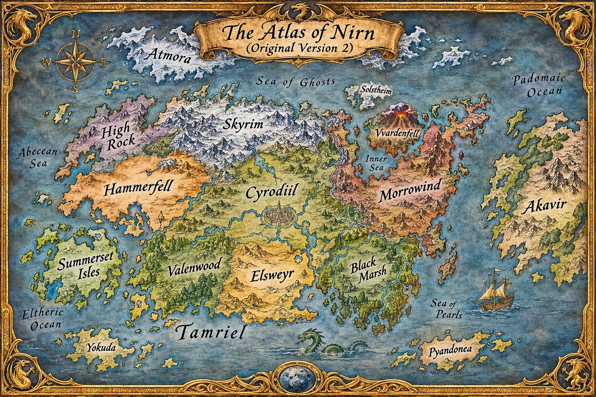

World of Nirn
Explore the lands of Tamriel

Tap or click a map label to open its lore card. With a mouse, pause over a location to preview it.

Tap or click a map label to open its lore card. With a mouse, pause over a location to preview it.